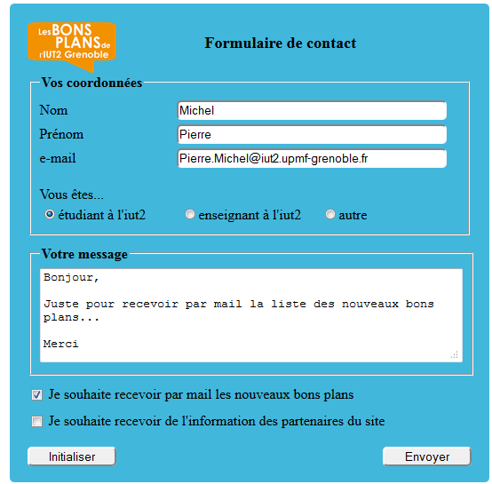
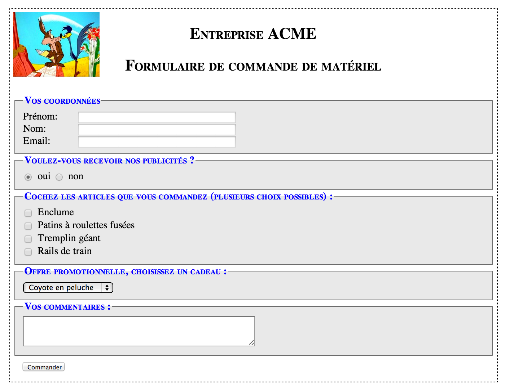
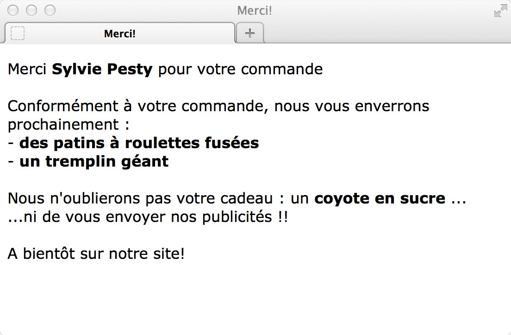

Université de Grenoble Alpes - IUT2 - Département informatique
M1105 - Web
TP 6 (4H)
Formulaires HTML5
Introduction au langage PHP
Objectifs du TP
- Se familiariser avec les formulaires HTML
- Comprendre l'échange client-serveur déclenché par la validation d'un formulaire
- Apprendre les bases du langage PHP
- Comprendre le principe de la programmation Web
Ce document est consultable sur la plateforme Chamilo du département.
Préparation
- Créer un répertoire TP6 dans votre répertoire M1105
- Se positionner dans ce répertoire TP6
- Recopier dans votre répertoire TP6 le contenu du répertoire /users/info/pub/1a/M1105/tp6
Déploiement sur un Serveur Web
Par commodité, jusqu'à maintenant nous avons travaillé "en local". Ainsi, vous chargiez directement les pages web par un "Open File" dans votre navigateur.
Il est maintenant temps de nous placer dans le contexte d'un véritable site web dans lequel
les pages web sont récupérées au moyen de requêtes HTTP adressées à un serveur web. Suivez le guide...
Installation de l'environnement de travail
Le logiciel serveur utilisé Apache est un logiciel libre
faisant partie d'un ensemble plus large développé par la fondation Apache (http://www.apache.org/).
Nous allons utiliser le serveur Apache qui a été installé sur la machine www-etu-info.iut2.upmf-grenoble.fr.
Normalement, pour mettre des pages Web sur ce serveur Apache, il suffit de les
copier dans le répertoire /var/www/ de la machine www-etu-info.iut2.upmf-grenoble.fr.
Mais vous n'êtes pas autorisés à
le faire! (vous n'avez pas les droits d'administrateur). Toutefois, le logiciel Apache permet à tout utilisateur d'avoir un
répertoire personnel dans lequel il rangera ses propres pages qui seront alors
accessibles par le serveur Apache.
Par exemple, pour l'utilisateur dont le login est toto:
- ses pages seront rangées dans le répertoire ~/public_html
- ses pages seront accessibles à l'URL : http://www-etu-info.iut2.upmf-grenoble.fr/~toto/
Attention! Pour avoir accès aux pages contenues dans les répertoires public_html
des utilisateurs, le serveur Apache a besoin d'avoir des droits en "lecture pour tous" sur ces pages. Pour donner ces droits facilement, un
script setup-public-html a été développé pour vous qu'il faudra ne pas oublier d'exécuter!
Ce script va donner des droits en "lecture pour tous" sur l'ensemble des fichiers de votre répertoire ~/public_html et des sous-répertoires. Si vous voulez voir le code de ce script, il est rangé dans le répertoire /users/info/pub/bin/
Remarque: Comme les droits de vos répertoires sont
réinitialisés toutes les nuits, il faudra à chaque séance, exécuter de nouveau ce script. De plus,
il faut l'exécuter dès lors qu'un nouveau fichier est créé/inséré dans votre répertoire ~/public_html ou l'un de ses sous-répertoire.
Test de l'installation
- Se créer un répertoire ~/public_html
- Copier dans ce répertoire une des pages web que vous avez réalisées lors d'une précédente séance de TP (ne pas oublier de recopier également le fichier de style et les images nécessaires).
- Donner les "bons" droits sur ces fichiers (exécuter le script setup-public-html)
- Visualiser dans le navigateur votre page web. Pour cela :
- Lancer le navigateur firefox
- Accéder à : http://www-etu-info.iut2.upmf-grenoble.fr/~votre_login/
Un premier formulaire
Les formulaires html permettent la saisie d'information par l'internaute (côté client) et déclenche un traitement côté serveur.
Classiquement, le traitement effectué côté serveur (par un programme PHP) retourne une page web qui est transmise au client pour affichage.
Testons
- Déplacer votre répertoire TP6 dans votre répertoire ~/public_html
- Exécuter le script setup-public-html afin que le serveur Apache puisse accéder aux répertoires et fichiers de votre répertoire ~/public_html
- Accéder à l'URL http://www-etu-info.iut2.upmf-grenoble.fr/~votre_login/ à partir de votre navigateur et accéder au formulaire form1.html
- Entrer votre nom et votre prénom dans les champs texte et cliquer sur le bouton d'envoi. Vous devez voir s'afficher
un message de salutation qui vous est personnellement adressé.
- Examiner l'URL apparaissant dans la barre d'adresse de votre navigateur:
- quel est le nom du programme PHP qui a été appelé?
- quels paramètres sont passés à ce programme? (nom des variables et valeurs)
- Afficher le code source de la page form1.html et constater qu'il s'agit bien d'une page html classique, et que cette page contient un formulaire.
Analysons
Ouvrir avec l'éditeur Atom le fichier form1.html et en analysant le code répondre aux questions suivantes :
- Quelle balise permet d'introduire un formulaire ?
- Quel attribut de cette balise permet de définir le programme à appeler lorsque l'utilisateur clique sur le bouton d'envoi ?
- Quelle balise et quel attribut correspondent aux champs que vous avez complétés ?
- Quelle balise correspond à l'intitulé des champs texte ?
- Quels attributs permettent de faire le lien entre les intitulés et les champs texte ?
A quoi cela sert-il ?
- Quelle balise et quel attribut correspondent au bouton permettant d'appeler le programme de traitement du formulaire ?
Approfondissons
Nous avons compris comment se structurait un formulaire. Mais d'autres questions restent en suspens.
- A quoi sert l'attribut method de la balise <form> ?
- Comment est-il possible que la page web retournée contienne les nom et prénom entrés
dans le formulaire ?
- Repérer les paramètres dans l'URL. Comment sont-il séparés ?
- Quel attribut de la balise <input> détermine le nom du paramètre passé dans l'URL ?
- Modifier l'attribut method de la balise <form> en remplaçant la valeur get par la valeur post.
- Recharger form1.html dans votre navigateur, entrer nom et prénom et cliquer sur le bouton d'envoi. Le résultat est-il identique ?
- Noter la nouvelle URL apparaissant dans la barre d'adresse de votre navigateur. En quoi se distingue-telle du précédent test ?
- Re-modifier l'attribut method de la balise <form> pour revenir à la valeur get.
- Les normes définies par le W3C n'autorisent l'utilisation que de certains caractères pour former des URLs (http://www.w3schools.com/tags/ref_urlencode.asp).
Saisir des noms et prénoms avec accents et blancs et observer l'encodage de ces caractères dans l'URL.
- Comprenez-vous maintenant comment la page web retournée peut afficher les valeurs que vous avez saisies sur la page précédente ?
En fait, que la methode soit GET ou POST, les paramètres sont bien passés au serveur Web!
GET et POST sont deux types de requête HTTP différents. Une requête HTTP est composée d'un en-tête et d'un corps.
Dans le cas du GET, les paramètres sont passés dans l'en-tête de la requête HTTP
et sont visibles dans la barre d'adresse URL. Dans le cas du POST ils sont passés dans le corps de la requête et ne sont pas visibles dans la barre d'adresse.
La taille de l'URL ayant une limite (dépendant du serveur et du navigateur) le passage des paramètres peut être problématique dans le cas du GET s'ils sont nombreux et/ou long.
On préconise d'utiliser la méthode POST lorsqu'on ne veut pas que l'internaute visualise les paramètres et/ou lorsque le nombre de paramètres est important.
Un formulaire plus complet
Testons
- Accéder à l'URL http://www-etu-info.iut2.upmf-grenoble.fr/~votre_login/ à partir de votre navigateur et accéder au formulaire form2.html
- Remplir les différents champs texte (monoligne et multiligne)
- Quelles particularités ont :
- l'attribut password ?
- l'attribut email ?
- Tester les cases à cocher, les boutons radio, la liste déroulante
- Quelle(s) différence(s) de fond (sont-elles interchangeables ?) voyez-vous entre les cases à cocher et les boutons radio ?
- Quelle(s) différence(s) de fond (sont-elles interchangeables ?) voyez-vous entre les boutons radio et les listes déroulantes ?
- Cliquer sur le bouton Initialisez puis sur le bouton Envoyez. Quels champs sont obligatoires ?
- Remplir convenablement tous les champs, cliquer sur Envoyez et visualiser la liste des paramètres transmis
par la requête HTTP et affichés dans la page retournée
- Ne pas remplir le champ Texte1 et cliquer sur Envoyez. Que remarquez-vous concernant le paramètre correspondant ?
- Ne cocher aucune "case à cocher" et cliquer sur Envoyez. Que remarquez-vous ?
- Cocher 3 "cases à cocher" et cliquer sur Envoyez. Que remarquez-vous ?
Analysons
Ouvrir le fichier form2.html avec l'éditeur Atom et en analysant le code répondre aux questions suivantes :
- Quel est le nom du script PHP qui sera appelé lorsque l'utilisateur validera son formulaire?
- Quelle balise permet de regrouper visuellement différents éléments d'un formulaire ?
- Quelles balises correspondent respectivement aux :
- Champs texte multiligne
- Case à cocher
- Boutons radio
- Listes déroulantes
- Quel attribut permet de rendre la complétion d'un champ obligatoire ?
- Quel(s) attribut(s) permettent de présélectionner un bouton radio ou un des éléments d'un liste déroulante ?
- Quelle sont les valeurs des attributs name? A quoi correspondent ces attributs name? Pourquoi sont-ils essentiels? et qui va les utiliser?
- Ouvrir le fichier form2.css avec l'éditeur Atom et en analysant le code répondez aux questions suivantes :
- Quel sélecteur permet de désigner les inputs ayant un certain type ?
- Quelle propriété css permet de changer la forme du curseur ?
Formulaire de contact pour le site "les bons plans de l'IUT2"
- Réaliser la page contact.html correspondant à l'image ci-dessous. Vous utiliserez obligatoirement la méthode GET.
- Ce formulaire appellera pour l'instant script2.php.

Premier programme PHP (sans serveur Web)
PHP a été conçu dès le départ comme un langage de programmation pour le Web. Cependant c'est aussi un langage
que l'on peut utiliser, comme Ada ou C, en local sur sa machine, sans serveur Web, sans interface HTML.
Placez-vous dans votre répertoire TP6 et exécutez la commande php premier.php .
Cette commande a pour action de lancer l'interprétation de premier.php par l'interpréteur php.
Le programme premier.php vise à vous donner les bases du langage PHP et à vous montrer quelques spécificités de ce langage.
Mais sachez que pour l'essentiel, PHP reprend la syntaxe du C.
Une documentation très complète sur PHP peut
être trouvée dans ce manuel PHP par exemple.
En mettant en correspondance la sortie générée par l'interpréteur et le code premier.php,
répondre aux questions suivantes (les questions suivent l'ordre d'exécution du programme):
- Remarquer d'abord que premier.php ne contient pas que du code php. Voyez-vous comment sont introduites les parties de code php
et comprenez-vous ce que l'interpréteur fait de ce qui n'est pas du php ?
- Comment sont introduits les commentaires ?
- Par quel caractère commence toute variable en php ?
- Où sont déclarées les variables ?
- Une variable peut-elle changer de type en cours d'exécution ?
- Donner le nom de la procédure d'affichage (il existe aussi
print ou encore
printf pour des sorties formatées)
- Identifier l'opérateur de concaténation
- Quelle différence faites-vous entre l'encadrement d'une chaîne par " ou ' ?
- Quel(s) caractère(s) correspond(ent) au saut de ligne ?
- Quel est le rôle du caractère d'échappement "\" ? (devant '$' par exemple)
- Modifier le code pour que l'affichage soit valeur de $a : "bonjour" (guillemets autour de bonjour).
Remarquer au passage, qu'il n'y a pas de compilation
- Comment écrit-on un Si ... Alors .... Sinon ... en PHP ?
- Quel mot-clé permet d'initialiser un tableau ?
- Est-il possible de ranger des valeurs de différents types dans un même tableau ?
- Comment écrit-on une boucle Pour ... en PHP ?
- Quelle fonction retourne le nombre d'éléments d'un tableau ?
- A quoi correspond la variable située juste après le mot-clé as dans la première forme du foreach ?
- A quoi correspond la variable située juste après le mot-clé as dans la seconde forme du foreach ?
- A quoi correspond la variable située juste après le mot-clé => dans la seconde forme du foreach ?
- Un tableau peut-il être indicé par des valeurs non entières en PHP ? et comment s'appelle un tel tableau?
- Ce programme PHP a-t-il généré du HTML ?
Programmation Web en PHP
Lorsqu'une requête HTTP est adressée à un serveur Web et que cette requête demande une page html, cette dernière est simplement retournée au client pour affichage.
Par contre, lorsque cette requête mentionne un script php, celui-ci est interprété côté serveur (le serveur Web intègre un interpréteur PHP)
et la sortie générée par l'interprétation du script est retournée au client pour affichage. C'est exactement le même principe avec des langages comme ASP (Microsoft)
ou JSP (Java). Le plus classiquement, le client est un navigateur web ("chrome" par exemple) et le script PHP, côté serveur, génère du HTML.
Nous allons maintenant analyser les programmes PHP script1.php et script2.php utilisés précédemment.
Editer script1.php et script2.php et les réexécuter si nécessaire pour répondre aux questions suivantes :
- Quel type de sortie script1.php et script2.php génèrent-ils ?
- Dans script1.php, il y 2 tableaux: $_GET et $_POST ? A quoi servent-ils? (voir le cours)
- Ces 2 tableaux $_GET et $_POST contiendront-ils tous les deux des valeurs?
- Supposons que dans le formulaire de form1.html la méthode GET est indiquée, quel tableau va récupérer les valeurs saisies par l'utilisateur? et quels seront les indices de ce tableau ?
- Les tableaux $_GET et $_POST sont des tableaux associatifs: qu'est-ce que cela signifie?
Développement du script de traitement du formulaire de contact du site "les bons plans de l'IUT2"
En vous inspirant de script2.php (et script1.php), développer un script que vous appelerez merci.php, pour répondre automatiquement à la soumission de votre formulaire de contact:
- Ce script retournera à l'internaute un message le remerciant personnellement (en réutilisant donc son nom et prénom) et l'informant de la bonne réception de son message.
- En fonction des cases cochées, on précisera aussi éventuellement que des informations lui seront envoyées (à l'adresse mail mentionnée dans le formulaire) par le site des bons plans et/ou les partenaires du sites.
- La page retournée affichera aussi un lien permettant un retour à la page d'accueil du site.
Attention, vous l'avez vu précédemment,
les paramètres correspondant aux boîtes à cocher ne sont pas envoyés si les
boîtes ne sont pas cochées. Aussi, il faut tester si le paramètre existe ; on utilisera pour cela l'appel à la fonction (isset())
(if (isset($_GET['nom_du_paramètre']))...) (voir la documentation de la fonction isset.)
Pour vous entrainer: Formulaire de l'entreprise ACME (extrait d'un examen)
Voici le formulaire de commande de matériel de l'entreprise ACME *:

Remarque: pour les cadeaux, les choix possibles sont
- Coyotte en peluche
- Coyotte en sucre
- Coyotte en plastique
Réalisation du formulaire:
- Réaliser les fichiers formulaire.html et formulaire.css pour reproduire le formulaire ci-dessus
- De préférence, utiliser la méthode GET, et observer les paramètres passés dans l'URL
- Les champs nom, prénom, email doivent être rendus obligatoires
- Un clic sur le bouton "Commander" doit déclencher l'appel de retour.php
Réalisation de la réponse:
- Développer retour.php selon le modèle ci-dessous

*Vous ne connaissez pas l'entreprise ACME??? Voici son histoire...
D'après http://fr.wikipedia.org/wiki/ACME: La compagnie ACME (ACME Corporation) est une société fictive. Elle a été fondée par le personnel de la Warner Bros. Les premiers produits à sortir des usines sont des bouchons de liège et sont vus pour la première fois en 1935 dans le dessin animé Buddy's Bug Hunt. Toutefois, la plupart des produits sont vus dans les dessins animés Bip Bip et Coyote où des produits ACME sont fréquemment achetés par Wile E. Coyote, qui commande armes, fusées et autres dispositifs, dans ses tentatives inventives et sans fin pour attraper Bip Bip. C'est dans cette série que l'entreprise prendra sa renommée.
L'activité de la compagnie n'est jamais clairement définie, mais elle apparaît comme un conglomérat pouvant manufacturer n'importe quel produit et offrir n'importe quel service imaginable, et ce peu importe leur extravagance ou leur inutilité. L'acronyme de la compagnie signifierait American Company Making Everything (Compagnie Américaine Fabriquant Tout) ou, selon d'autres, A Company that Makes Everything (Une Compagnie qui Fait Tout), ou encore Another Company Making Everything.